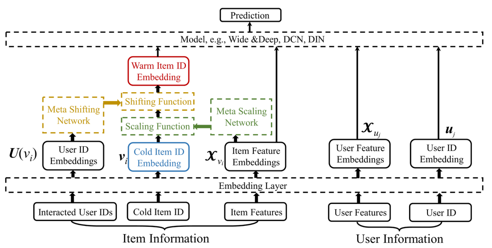

Learning to Warm Up Cold Item Embeddings for Cold-start Recommendation with Meta Scaling and Shifting Networks (基于元缩放与平移网络的冷物品嵌入热身学习)
- 会议/期刊: SIGIR 2021
- 作者与机构: Yongchun Zhu, Ruobing Xie, Fuzhen Zhuang 等 (中科院计算所、腾讯微信搜索应用部、北航)
- 推荐链路定位: 精排/召回通用模块 (点式 CTR 打分)
- 研究方向: 冷启动与长尾推荐 / CTR 预估
- 论文原文: https://arxiv.org/abs/2105.04790v1
- 开源代码: 暂未开源
TL;DR (1分钟核心速览)
冷物品只有少量交互，训练出的 ID 嵌入既与深模型的特征空间存在 gap，又极易被错误点击噪声污染。本文提出 MWUF：用物品特征生成逐物品的缩放函数把冷 ID 嵌入拉进热特征空间，用交互用户均值生成平移函数对噪声嵌入做稳定化去偏，并以"全旧物品模拟冷启动 + 基础模型冻结 + 双层损失解耦"训练。在 MovieLens-1M / Taobao Ad / CIKM2019 的时间戳三段热身协议下，MWUF(AFN) 在 Taobao 热身首段 AUC 相对 Wide&Deep 提升 167.5%，并可与 6 种基础模型即插即用。
Background & Motivation (背景与核心矛盾)
- 主流范式: 深模型 = Embedding 层（含 item ID embedding）+ 深网络；热物品 ID 嵌入训练充分，冷物品 ID 嵌入几乎随机。
- 前人局限: MetaEmb 只学一个初始嵌入（生成器），MeLU/MAMO 只个性化深模型参数，DropoutNet 只做输入 dropout 鲁棒化——没有方法同时处理"空间错位"与"噪声"两个矛盾；且生成初始嵌入只是热身起点，无法在极少步内让嵌入真正适配已冻结的热模型。
- 核心洞察 (Key Insight): (1) 冷/热 ID 嵌入处于不同特征子空间，相似物品的"冷→热"映射关系应也相似，而相似性可由物品侧特征稳定刻画；(2) 错误点击对 item ID 参数的影响远大于其他参数，而交互用户嵌入均值天然抗离群点。
- 本文切入点: 不做"参数个性化"或"初始化"，而是用一个元网络为每个物品现场生成变换函数，把冷嵌入 \(\boldsymbol{v}_i\) 直接改写为可用的热嵌入。
Method (核心方法设计)
1. 整体框架 (Overall Architecture)
两阶段解耦训练。阶段一：用全部数据预训练基础模型 \(f(\cdot;\theta)\)与嵌入层\(\phi\)（含物品 ID 嵌入\(\boldsymbol{v}\)），此后\(\theta,\phi\)永久冻结，故不对热物品产生任何扰动。阶段二：新建一个待学习的 ID 嵌入层\(\phi^{new\_id}\)，其所有物品嵌入\(\hat{\boldsymbol{v}}\)统一用旧物品嵌入的均值初始化，从而把所有旧物品"伪装"成冷物品来模拟冷启动；同时训练两个元网络\(h(\cdot;\boldsymbol{w}_{scale})\)与\(g(\cdot;\boldsymbol{w}_{shift})\)。每个 batch 前向两次：一次用冷嵌入\(\hat{\boldsymbol{v}}_i\)算\(\mathcal{L}_{cold}\)更新\(\phi^{new\_id}\)，一次用热嵌入\(\boldsymbol{v}^{warm}_i\)算\(\mathcal{L}_{warm}\)更新两个元网络。推理时冷物品直接查表得到\(\boldsymbol{v}^{warm}_i\)，热物品走原路径，MWUF 对热物品零开销。
flowchart TD
A["新物品: 特征 X_vi + 交互用户集 U(vi)"] --> B["均值初始化 ID 嵌入 v_i"]
B --> C["Meta Scaling Net: τ^scale = h(X_vi)"]
B --> D["Meta Shifting Net: τ^shift = g(mean(U(vi)))"]
C --> E["v_warm = v_i ⊙ τ^scale + τ^shift"]
D --> E
E --> F["冻结的深模型 f(·;θ) → ŷ_warm"]
B --> G["ŷ_cold → L_cold 更新 φ^new_id"]
F --> H["L_warm 更新 w_scale, w_shift"]
2. 关键设计拆解 (Key Designs)
-
公共初始 ID 嵌入 (Common Initial Embedding)：随机初始化既无信息又使元网络难以优化；改为取全体旧物品嵌入均值 \(\bar{\boldsymbol{v}}=\frac{1}{|\mathcal{V}_{old}|}\sum_{i\in\mathcal{V}_{old}}\boldsymbol{v}_i\) 初始化每个新物品。它同时兜住"零样本冷启动阶段"，并为元网络提供可微的良好起点（消融中 MWUF(init) 已超随机初始化基线）。
-
Meta Scaling Network（特征空间对齐，加速适配）：冷热空间错位的根因是交互信号不足，因此改用稳定的物品特征做"条件变换"： $\(\boldsymbol{\tau}^{scale}_{v_i}=h(\mathbf{X}_{v_i};\boldsymbol{w}_{scale}),\qquad \boldsymbol{v}^{warm}_i=\boldsymbol{v}_i\odot\boldsymbol{\tau}^{scale}_{v_i}\)$ 本质是逐物品的 FiLM 式仿射缩放，让特征相近的物品学到相近的冷→热映射，把嵌入一步推进热特征空间；元网络仅两层 16 维隐藏，几乎不增开销。
-
Meta Shifting Network 与总目标（噪声稳定化）：噪声来自少量错误点击，故用交互用户嵌入的无权均值 \(\mathrm{G}(\mathbf{U}(v_i))\) 作为抗噪"邻域表征"生成加性偏移： $\(\boldsymbol{\tau}^{shift}_{v_i}=g\big(\mathrm{G}(\mathbf{U}(v_i));\boldsymbol{w}_{shift}\big),\qquad \boldsymbol{v}^{warm}_i=\boldsymbol{v}_i\odot\boldsymbol{\tau}^{scale}_{v_i}+\boldsymbol{\tau}^{shift}_{v_i}\)$ 两项分离可解释：缩放负责跨空间迁移，平移负责与邻居表征融合。训练目标为双层最小化 \(\min_{\phi^{new\_id}}\mathcal{L}_{cold}\)与\(\min_{\boldsymbol{w}_{scale},\boldsymbol{w}_{shift}}\mathcal{L}_{warm}\)，均用 log-loss，无负采样（点式二分类，全量样本训练）；两网络共享结构但参数独立，故框架 model-agnostic。在线仅需对冷物品调用两次小 MLP，热物品不感知。
Experimental Setup & Evaluation Protocol (实验设置与评估协议)
- 数据集与预处理:
| 数据集 | #Users | #Items | #Interactions | 说明 |
|---|---|---|---|---|
| MovieLens-1M | 6,040 | 3,706 | 1.0M | 评分 ≥4→1，否则 0；物品特征=标题/年份/类型 |
| Taobao Display Ad | 1.14M | 广告 | 26M (8 天) | 广告=物品；用户 9 个类别属性 |
| CIKM2019 EComm | — | — | — | 电商行为 (pv/buy/cart/fav) → 是否购买二分类 |
- 数据划分与防穿越: 按时间戳切分：交互数 > \(N\)为旧物品（\(N\)=200/2000/350），\(3K<\)交互数\(\le N\)为新物品（\(K\)=20/500/50）；每个新物品按时间排序，前\(3K\) 切成 warm-a/-b/-c 三段，其后为测试集，新/旧比≈8:2（模拟长尾分布）。
- 排名评测协议: 点式 AUC（非 Full-Ranking 检索指标），同时报告相对提升 \(\text{RelaImpr}=\big(\frac{AUC_{m}-0.5}{AUC_{base}-0.5}-1\big)\times100\%\)；十次运行取均值，配对 t-test 检验（\(p\le0.05\)）。
- 对比基线与超参设置: 三组基线——CF (FM, Wide&Deep, PNN, DCN, AFN)、冷启动 (DropoutNet, MeLU, MetaEmb)、序列 (GRU4Rec, DIN)；嵌入维度 \(d=16\)，基础 MLP 三层 64 维，元网络两层 16 维，Adam，lr=1e-3，batch=256，每步仅训 1 epoch 以严格模拟"少步适配"。
Key Experimental Results (实验关键数据)
1. 主实验对比 (Main Results)
| Method | ML-1M cold | ML-1M warm-c | Taobao cold | Taobao warm-c | CIKM cold | CIKM warm-c |
|---|---|---|---|---|---|---|
| FM | .5250 | .5525 | .5020 | .5126 | .5386 | .5598 |
| Wide & Deep | .5968 | .6523 | .5233 | .5634 | .6479 | .7010 |
| PNN | .5920 | .6493 | .5156 | .5515 | .6512 | .7022 |
| DCN | .6027 | .6612 | .5206 | .5574 | .6596 | .7008 |
| AFN | .5862 | .7029 | .5241 | .5810 | .6693 | .7363 |
| DropoutNet | .6432 | .6628 | .5214 | .5655 | .6555 | .6980 |
| MeLU | .6434 | .6760 | .5226 | .5360 | .6595 | .7032 |
| MetaEmb | .6369 | .6983 | .5250 | .5633 | .6642 | .7095 |
| DIN | .6077 | .6895 | .5197 | .5580 | .6428 | .7545 |
| MWUF(Wide&Deep) | .6339 | .7273 | .5255 | .5919 | .6637 | .7236 |
| MWUF(AFN) | .6370 | .7447* | .5302 | .5965* | .6741 | .7556* |
（* 表示相对最优基线统计显著；MWUF(Wide&Deep) 在 Taobao warm-a 相对 Wide&Deep 的 RelaImpr 达 120.2%，MWUF(AFN) 达 167.5%。）
2. 消融实验 (Ablation Study)
在 CIKM2019 + Wide & Deep 上逐项拆解（图 3，趋势）：
| 变体 | 组成 | 相对趋势 (cold → warm-c) |
|---|---|---|
| Wide & Deep | 随机初始化 | 最低基线 |
| MWUF(init) | 仅均值初始化 | 明显高于基线 |
| MWUF(shift) | init + 平移网络 | 高于 init |
| MWUF(scale) | init + 缩放网络 | 高于 shift |
| MWUF | init + 缩放 + 平移 | 最优且各段稳定 |
3. 关键实验发现 (Key Findings)
- "缩放"比"平移"更关键：消融中 MWUF(scale) 全面优于 MWUF(shift)，说明把冷嵌入变换进热特征空间（空间对齐）带来的收益大于单纯叠加邻居表征（信息融合）；这也解释了为何 MWUF 搭在特征交叉能力更强的 AFN 上（Taobao warm-a 0.5872）比搭在 Wide&Deep 上（0.5718）高出约 1.5 个绝对 AUC 点。
- MWUF 的增益集中在热身期而非零样本期：MovieLens cold 段 MWUF(Wide&Deep)=.6339 仍低于 MeLU(.6434)/DropoutNet(.6432)/MetaEmb(.6369)，因为零交互时平移网络无 \(\mathbf{U}(v_i)\) 可用、只能靠均值初始化；一旦有少量样本，RelaImpr 迅速爬升至 59.0%→60.3%（warm-a/-b）。
- 增益随数据增多而衰减：MWUF(Wide&Deep) 在 ML 上 RelaImpr 从 38.3%(cold) 升至 60.3%(warm-b) 后回落至 49.2%(warm-c)；因冷热嵌入 gap 本身随交互增加而缩小，说明该框架的核心价值是"加速收敛"而非"抬升上限"。
Highlights & Limitations (亮点、对比与审稿批判)
- 与代表作对比: vs. MetaEmb（只学一个初始嵌入，把"热身"当"初始化"）本文直接改写嵌入向量本身、且用用户均值去噪；vs. MeLU/MeLU 系（个性化深模型参数，在广告场景失效，Taobao warm-b 仅 .5256）本文冻结基础模型、只动 ID 嵌入，模型无关且不影响热物品；vs. DropoutNet（输入 dropout 鲁棒化，Taobao 几乎不涨）本文用"显式去噪 + 显式空间迁移"两条独立通路。
- 可迁移亮点: (1) "旧数据伪装冷启动 + 基础模型冻结 + 双损失解耦"的训练范式可直接复用到任何需要在线快速适配新 ID 的场景（新用户、新广告主、新 Query）；(2) 用侧信息生成 FiLM 式 scale/shift 作为免梯度几步的嵌入校准器，可插入双塔召回的 item 塔末端。
- 审稿级局限批判: (1) 评估口径偏窄：仅点式 AUC，未做 Full-Ranking/NDCG，也未控制曝光偏差与位置偏差，结论在检索排序任务上未必成立；(2) 零样本段无实质突破：cold 段仍依赖均值初始化，且论文显式声明"主要关注 warm-up"，对 |U(v)|=0 的平移网络缺失问题未给出方案；(3) 超参敏感：物品冷/热划分阈值 \(N\)与段长\(K\)均为人工设定（200/2000/350 与 20/500/50），增益对\(K\) 的稳定性未做敏感性分析。
Rating (四维评分)
- 方法创新性 (Novelty): ⭐⭐⭐⭐ （把 FiLM 式条件缩放/平移引入冷 ID 嵌入热身，两通路分别对应"空间对齐"与"噪声稳定化"，机制清晰且有特征相似性直觉支撑）
- 评估协议与实验扎实度 (Protocol & Experiments): ⭐⭐⭐⭐ （三数据集 + 时间戳三段热身 + 十次运行均值 + t 检验 + 六基础模型泛化，但仅 AUC 点式指标、缺全库排序与冷启动零样本对照）
- 写作与数学规范度 (Clarity & Rigor): ⭐⭐⭐⭐ （公式极简、两阶段训练与算法伪码交代清楚，双层优化动机解释到位；但缺复杂度与收敛性分析）
- 工业落地与复现价值 (Industrial & Practical Value): ⭐⭐⭐⭐ （模型无关、热物品零开销、两小 MLP 易上线，腾讯微信搜索场景验证；可惜未开源，复现依赖冷/热划分细节）